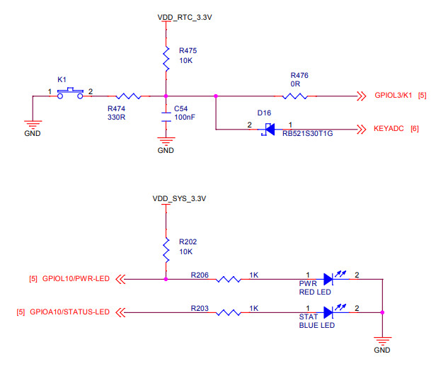
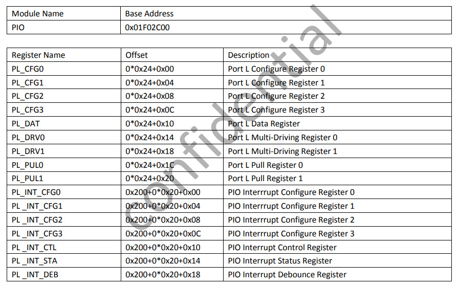
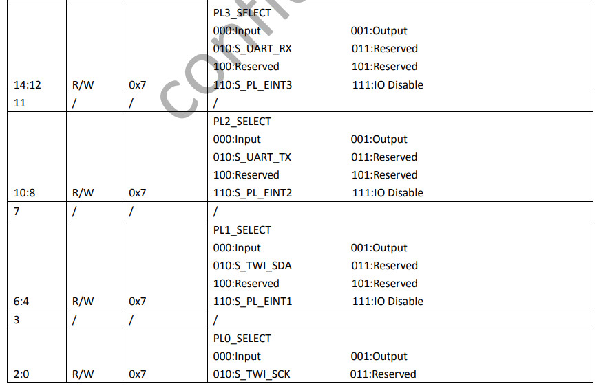
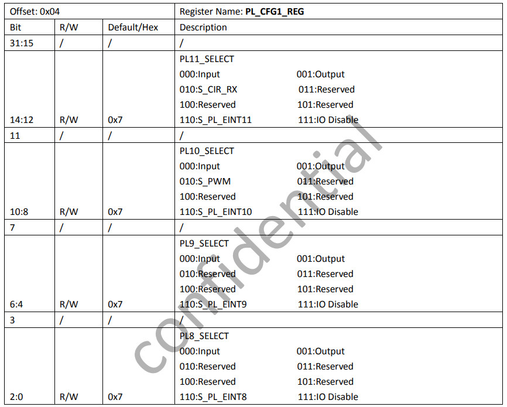
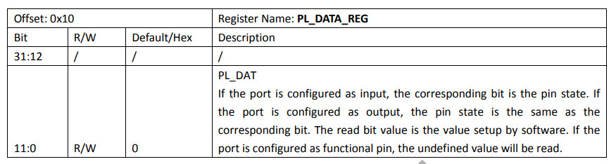
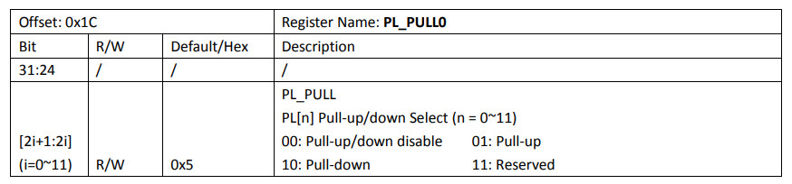
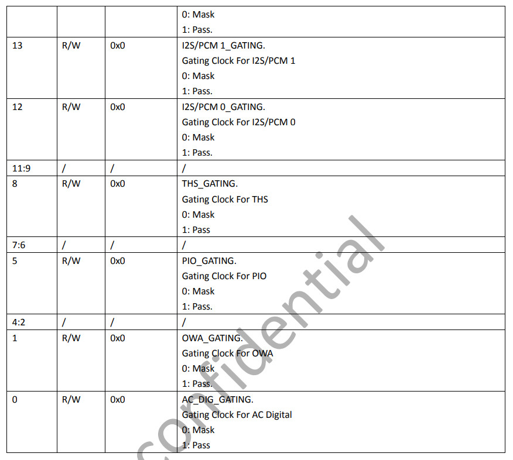
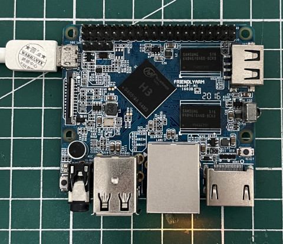
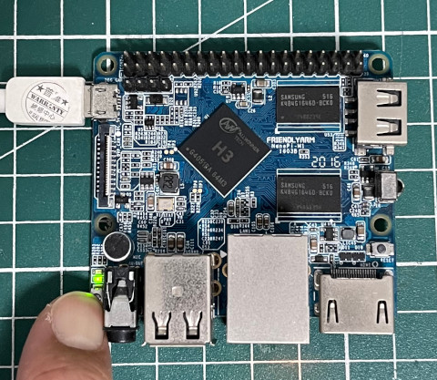

Steward
分享是一種喜悅、更是一種幸福
微處理器 - Allwinner H3 (NanoPi M1) - Assembly - Button
參考資料：
https://github.com/friendlyarm/u-boot/tree/sunxi-v2017.x/arch/arm/include/asm/arch-sunxi
綠色LED是連接到PL10，按鍵則是連接到PL3

R_GPIO位址

PL_CFG0

PL_CFG1

PL_DATA

PL_PUL0

BUS_CLK_GATING_REG2

main.s
.global _start
.equ PRCM, 0x01f01400
.equ CCU, 0x01c20000
.equ PIO, 0x01c20800
.equ R_PIO, 0x01f02c00
.equ PA_CFG1, (PIO + (0x24 * 0) + 0x04)
.equ PA_DATA, (PIO + (0x24 * 0) + 0x10)
.equ PL_CFG0, (R_PIO + (0x24 * 0) + 0x00)
.equ PL_CFG1, (R_PIO + (0x24 * 0) + 0x04)
.equ PL_DATA, (R_PIO + (0x24 * 0) + 0x10)
.equ PL_PUL0, (R_PIO + (0x24 * 0) + 0x1c)
.equ BUS_CLK_GATING_REG2, (CCU + 0x68)
.equ PRCM_APB0_GATE, (PRCM + 0x28)
.equ PRCM_APB0_RESET, (PRCM + 0xb0)
.equ PRCM_SEC_SWITCH, (PRCM + 0x1d0)
.arm
.text
_start:
.long 0xea000016
.byte 'e', 'G', 'O', 'N', '.', 'B', 'T', '0'
.long 0, __spl_size
.byte 'S', 'P', 'L', 2
.long 0, 0
.long 0, 0, 0, 0, 0, 0, 0, 0
.long 0, 0, 0, 0, 0, 0, 0, 0
_vector:
b reset
b .
b .
b .
b .
b .
b .
b .
reset:
ldr r0, =BUS_CLK_GATING_REG2
ldr r1, [r0]
orr r1, #(1 << 5)
str r1, [r0]
ldr r0, =PRCM_SEC_SWITCH
ldr r1, =(1 << 2) | (1 << 1) | (1 << 0)
str r1, [r0]
ldr r0, =PRCM_APB0_GATE
ldr r1, [r0]
orr r1, #(1 << 0)
str r1, [r0]
ldr r0, =PRCM_APB0_RESET
ldr r1, =(1 << 0)
str r1, [r0]
ldr r0, =PL_CFG0
ldr r1, =0x00000000
str r1, [r0]
ldr r0, =PL_CFG1
ldr r1, =0x00000100
str r1, [r0]
ldr r0, =PL_PUL0
ldr r1, =0x00000040
str r1, [r0]
ldr r0, =PL_DATA
0:
ldr r1, [r0]
lsl r1, #7
eor r1, #(1 << 10)
str r1, [r0]
b 0b
.end
P.S. 由於沒有PRCM相關文件可以參考，所以司徒從U-Boot把PRCM初始化的部份抄出來
完成

